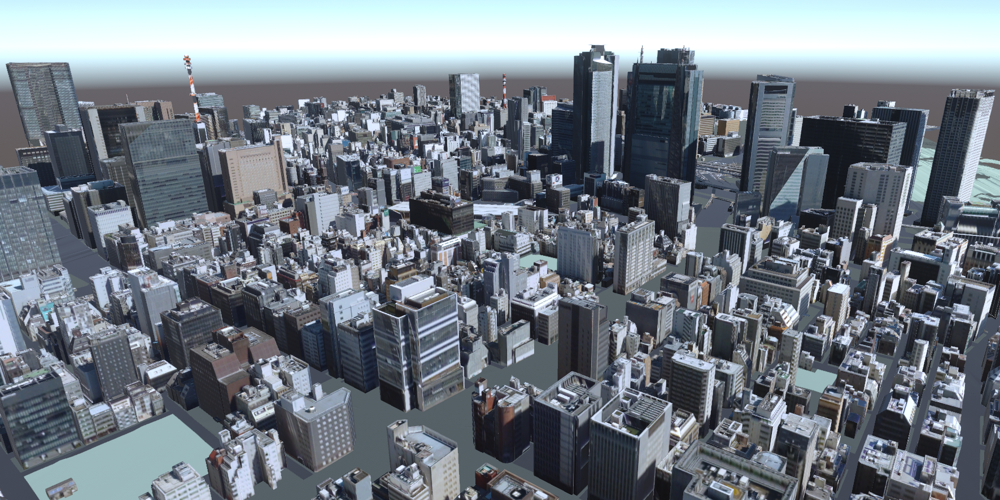

PLATEAU SDK for Unity
このパッケージには、PLATEAUの3D都市モデルデータを利用するためのAPI、サンプルが含まれます。PLATEAU SDK for Unityを利用することで、実世界を舞台にしたゲームの開発や、PLATEAUの豊富なデータを活用したシミュレーションを簡単に行うことができます。 
SDKでできることを知る
都市データを使ったアプリやシミュレーションの例を下に示します。


SDK活用の実践編
PLATEAU SDK for Unity を用いて実際にコンテンツを構築するチュートリアルをいくつかご紹介します。
初級編：サンプルをカスタマイズして自分のデータに合わせてみよう
まずは用意されたサンプルを少し変更して、自分の都市データに合わせてみましょう。
簡単な操作で建物に色を付けたり、クリックで情報を表示できるようになります。

中級編：実際にミニゲームを作ってみよう
次のステップとして、実際に都市空間を利用したゲームを実際に構築してみましょう。
キャラクターの移動や基本的な操作要素を追加することで、都市データを舞台とした簡易的なミニゲームを実装できます。
Note
PLATEAU SDK for Unityは利用者アンケートを実施しています。
今後の開発の参考にするため、ユーザーの皆様の忌憚ないご意見をお聞かせください。
◆アンケートはこちら
Note
PLATEAU Slackコミュニティにどなたでもご参加いただけます。
参加希望の方は、お問い合わせページよりお気軽にお問い合わせください。
◆お問い合わせページはこちら
Note
PLATEAU SDK-Toolkits for Unity
3D都市モデルを利用したUnity上でのアプリケーション開発を支援するツールキット群として「PLATEAU SDK-Toolkits for Unity」を公開しています。
PLATEAU SDK-Toolkits for Unity は PLATEAU SDK for Unity を前提とするアドオンですので、是非あわせてご利用ください。
◆PLATEAU SDK-Toolkits for Unityのリポジトリはこちら